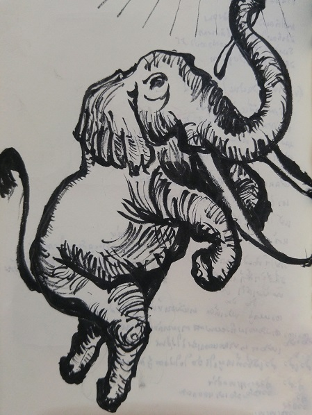

"ก่อนจะทรงมีพระประสูติกาล พระมารดาของพระองค์ทรงสุบินเห็นพญาช้างเผือก ๖ งวง ลอยลงจากสวรรค์พร้อมด้วยเสียงแซ่ซ้องสรรเสริญ พญาช้างเผือกเดินตรงเข้าหาพระองค์ ผิวของมันขาวดุจหิมะบนเขาสูง มันใช้งวงชูดอกบัวสีชมพูอันสว่างไสวและวางดอกบัวลงบนพระวรกายของพระนางสิริมหามายา หลังจากนั้นพญาช้างเผือกก็เข้ามาในพระวรกายของพระนางอย่างง่ายดาย และทันใดนั้น พระนางก็รู้สึกถึงความเบาสบาย และความสุขอย่างลึกล้ำ พระนางทรงรู้สึกว่านับแต่นี้ไป พระนางจะไม่มีความทุกข์ ความกังวลหรือความเจ็บปวดอีก"
-- บทที่ ๖ ใต้ต้นชมพู่, คือเมฆสีขาวทางก้าวเก่าแก่ เล่ม ๑